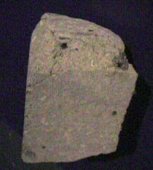

|

|
The vast majority of meteorites are thought to come from the asteroid belt, but a number have been identified as coming from either the Moon or Mars.
The small section of meteorite at left, identified as having come from Mars, is on display in the Smithsonian Museum of Natural History. The section is about 10 cm across. It was discovered in Victorialand, Australia in 1979.
|